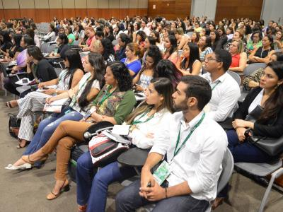

Sobre o Evento
O Saúde em Foco 2026 é um evento voltado para estudantes, profissionais e pesquisadores da área da saúde. Durante o encontro serão realizadas palestras, oficinas e debates sobre inovação, prevenção e qualidade de vida.

- Data:25/10/2026
- Local: Rua Paranaguá nº 102
- Horário: 08:00h